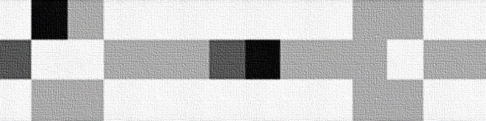
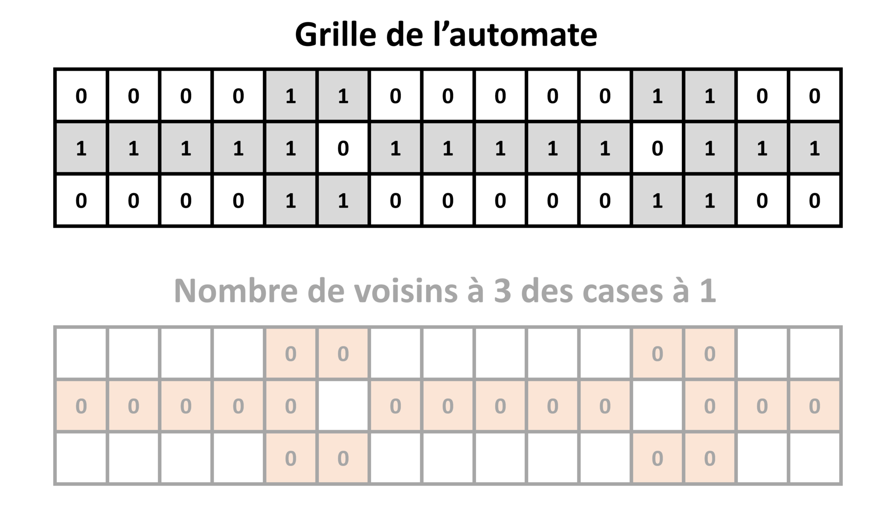
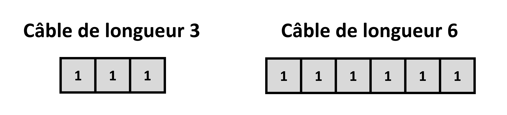
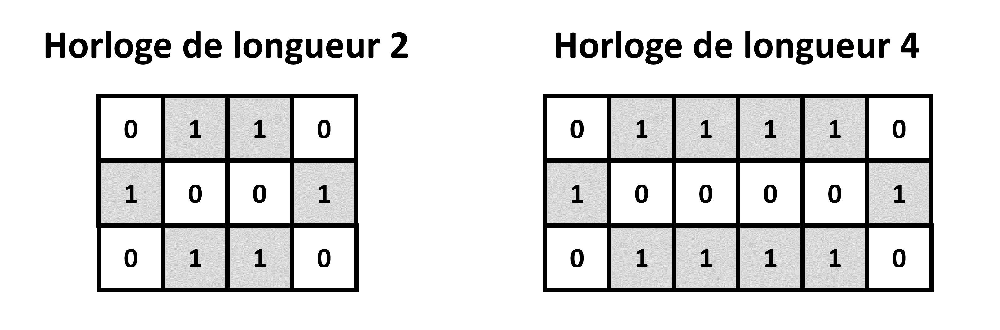
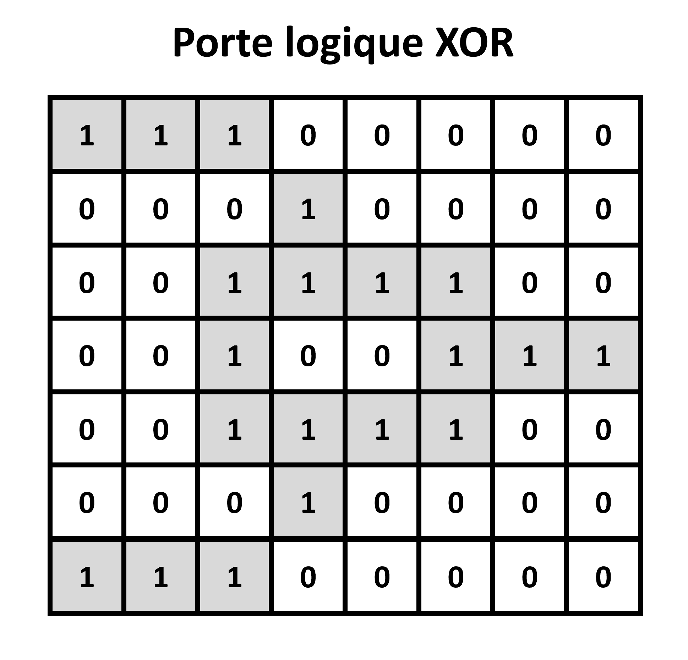
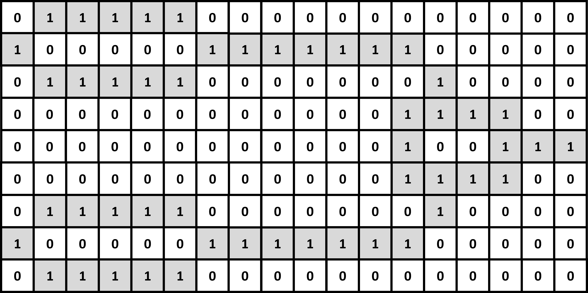
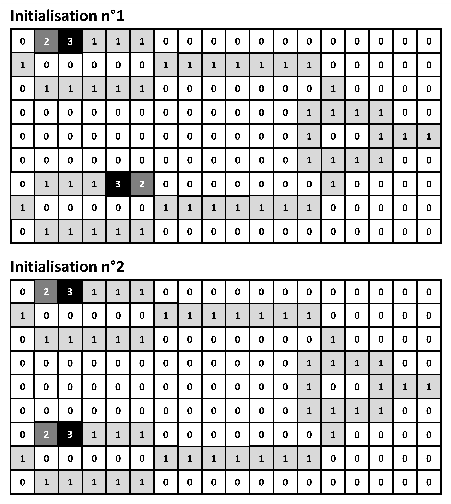
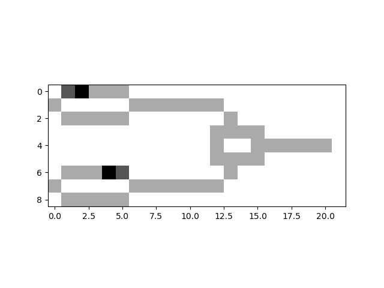

TP 3 : Les méthodes spéciales

Lors de ce TP, nous allons programmer un automate cellulaire 2D de type "Wire-world", en complétant différentes classes, ayant différentes intéractions : électrons, charges, composants, circuit, automate, etc. Ces différentes classes feront appel à un concept très utile : les méthodes spéciales Python.
Wire-world
Ce TP portera à nouveau sur un type particulier d'automate cellulaire 2D : Wire-world.
Imaginé en 1987 par l'informaticien Canadien Brian Silverman, "Wire-world" est à l'origine conçu comme un jeu éducatif. Comme son nom l'indique, le but est de simuler un circuit électronique, avec des câbles, des composants, et des électrons se déplaçant sur le circuit.
Contrairement aux automates que nous avons programmés précédemment, dont la grille ne pouvait contenir que les valeurs 0 ou 1, la grille de "Wire-world" peut contenir les valeurs 0, 1, 2 ou 3. Si une case est à la valeur :
-
0 on la considère comme "vide" ou "isolante".
-
1 on la considère comme un "conducteur".
-
2 on la considère comme la "queue d'un électron".
-
3 on la considère comme la "tête d'un électron".
On initialise un circuit en positionnant des 0 et des 1 sur la grille. Ensuite, on ajoute un ou plusieurs électrons quelque part sur du conducteur, avec un 2 et un 3 collés l'un à l'autre.
Les cases de la grille changent ou non de valeur à chaque itération, suivant les règles suivantes :
-
Si une case est à 0, elle restera toujours à 0.
-
Si une case est à 3, elle passe à 2 à l'itération suivante.
-
Si une case est à 2, elle passe à 1 à l'itération suivante.
-
Si une case est à 1, si 1 ou 2 de ses voisins (voisinage de Moore) est à la valeur 3, alors elle passe à 3 à l'itération suivante. Sinon, elle reste à 1.

Avec ce jeu de règles simples, on peut simuler différents types de composants de la vie réelle : des câbles électriques, des diodes, des horloges, des portes logiques, et même des transistors.
Lors de ce TP, nous allons programmer un automate cellulaire "Wire-world", sous la forme de plusieurs classes Python :
-
Des classes pour un électron et un conteneur d'életrons (que l'on appelera "charges").
-
Des classes pour les composants, et un conteneur de composants (que l'on appelera "circuit").
-
Une classe mère pour un automate cellulaire 2D de manière générale, et une classe fille pour un automate "Wire-world" en particulier.
Ces classes feront appel à des méthodes spéciales Python.
N'oubliez pas d'importer Numpy et Matplotlib au début de votre programme !
Définition des électrons
Nous allons commencer par programmer les classes qui nous permettrons d'initialiser l'automate avec des électrons.
Pour ce faire, il faut définir à Python ce qu'est un "électron" (ses attributs et ses méthodes), puis définir un conteneur d'électron. Un conteneur d'électrons sera fourni à l'initialisation de Wire-world.
Un électron
Tout d'abord, définissons ce qu'est un électron pour Wire-world : il s'agit d'un objet qui a une tête et une queue, positionné sur la grille de l'automate à des coordonnées fournies par l'utilisateur.
Voici la structure de la classe electron que nous allons programmer :
class electron():
def __init__(self,head_position,tail_position):
#Complétez ici
def get_head(self):
#Complétez ici
def get_tail(self):
#Complétez ici
Constructeur
Complétez le constructeur.
Il prendra en entrée 2 tuples head_position et tail_position, contenant respectivement les coordonnées de la tête et de la queue de l'électron sur la grile.
Il initialisera les attributs d'instance head et tail avec ces entrées.
| Nota Bene |
|---|
| En toute rigueur, il faudrait que le constructeur vérifie que la tête et de la queue de l'électron sont bien collées. |
Getters
Complétez ensuite les méthodes get_head et get_tail.
Il s'agira de "getters" permettant de récupérer les attributs d'instance head et tail de l'électron.
Un conteneur d'électrons (charges)
Maintenant, nous allons définir un conteneur d'électrons, que nous allons appeler "charges". L'idée sera de pouvoir facilement itérer sur les électrons fournis à l'initialisation de l'automate.
Voici la structure de la classe charges que nous allons programmer :
class charges():
def __init__(self):
#Complétez ici
def __len__(self):
#Complétez ici
def __getitem__(self,i):
#Complétez ici
def __setitem__(self,i,elec):
#Complétez ici
def __iter__(self):
self.index = -1
return self
def __next__(self):
self.index += 1
if self.index < len(self):
return self[self.index]
else:
raise StopIteration
def __add__(self,elec):
#Complétez ici
def __sub__(self,elec):
#Complétez ici
Constructeur
Complétez le constructeur.
Il initialisera un attribut d'instance electrons avec une liste vide.
C'est cette liste qui contiendra les électrons du conteneur.
Méthode spéciale len
Complétez la méthode spéciale __len__, qui devra retourner le nombre d'électrons dans le conteneur.
Comment feriez-vous alors pour récupérer le nombre d'électron d'une instance cha de la classe charges ?
Méthodes spéciales getitem et setitem
Complétez les méthodes spéciales __getitem__ et __setitem__, qui permettront de respectivement de récupérer l'électron à l'indice i, et d'assigner à l'indice i un électron elec.
Comment feriez-vous alors pour récupérer un électron de l'instance cha de charges à l'indice 3 ?
Et comment feriez-vous pour assigner à l'indice 6 de cha une instance d'électron ele ?
Méthodes spéciales iter et next
Les méthodes __iter__ et __next__ sont déjà complétées.
Elles permettront d'itérer sur les électrons contenus dans une instance de charges.
Par exemple, pour une instance cha de charges, on pourra écrire : for ele in cha.
Méthodes spéciales add et sub
Complétez les méthodes __add__ et __sub__, qui permettront respectivement d'ajouter et de retirer des électrons au conteneur, à l'aide des opérateurs + et -.
Comment feriez-vous pour ajouter un électron de tête et queue de positions (0,1) et (0,0) à une instance cha de charge, en utilisant l'opérateur + ?
Définition des composants
Nous allons à présent programmer les classes qui nous permettrons d'initialiser l'automate avec un circuit de composants.
Pour ce faire, il faut définir à Python ce qu'est un "composant" (ses attributs et ses méthodes), puis définir un conteneur de composants (un circuit). Un conteneur de composant sera fourni à l'initialisation de Wire-world.
Un composant
Définissons maintenant ce qu'est un composant pour Wire-world : il s'agit d'un objet qui contient la position des cases "conductrices" d'une partie de la grille de l'automate, imitant le comportement d'un composant électronique réel.
Nous allons d'abord définir ce qu'est un composant de manière générale dans une classe-mère, de laquelle hériterons tous les composants.
Voici la structure de la classe mère component que nous allons programmer :
class component():
def __init__(self,wire_pixels):
#Complétez ici
def get_wire_pixels(self):
#Complétez ici
def position_shift(self,shift_x,shift_y):
#Complétez ici
Constructeur
Complétez le constructeur.
Il prendra en entrée une liste de tuples wire_pixels, chaque tuple contenant les coordonnées sur la grille d'une case conductrice du composant.
Il initialisera l'attribut d'instance wire_pixels avec cette entrée.
Getter
Complétez la méthode get_wire_pixels.
Il s'agira d'un "getter", permettant de récupérer l'attribut d'instance wire_pixels.
Positionnement
Complétez la méthode position_shift.
Elle prendra en entrée 2 entiers shift_x et shift_y, et appliquera à toutes coordonnées de l'attribut d'instance wire_pixels un décalage de shift_x cases en horizontal, et de shift_y cases en vertical.
L'idée est que cette méthode nous permettra de placer un composant à la position désirée sur la grille de l'automate, afin de former notre circuit.
Les méthodes filles de component définiront les coordonnées des cases conductrices du composant, en concidérant la case en haut à gauche comme étant à la coordonnée (0,0).
Puis, elles utiliseront la méthode position_shift pour placer une instance du composant à la position désirée par l'utilisateur.
Les différents types de composants
Maintenant que nous avons définit ce qu'était un composant de manière générale dans une classe mère component, nous allons définir différents types de composants dans des classes filles.
Nous n'en définirons ici que 3 : le câble, l'horloge et la porte logique XOR.
Mais il en existe bien d'autres dans Wire-world !
Pour le définir, il nous suffirait d'ajouter d'autres classes filles de component.
Le câble
Commençons par définir le câble.
Comme son nom l'indique, il s'agira simplement d'une ligne horizontale de cases conductrices, d'une longueur donnée :

On se servira de ce composant pour relier d'autres composants entre eux, à la manière d'un fil électrique dans le monde réel.
Complétez alors la classe wire suivante :
class wire(component):
def __init__(self,pos_x,pos_y,length):
#Complétez ici
Son constructeur prendra en entrée 3 entiers pos_x, pos_y et length, contenant respectivement la position horizontale, la position verticale et la longueur du câble à initialiser.
On considèrera que (pos_x,pos_y) sont les coordonnées de la case la plus à gauche du câble.
Pour placer le câble à la bonne position, on pourra définir ses coordonnées relativement à (0,0), puis le déplacer avec la méthode position_shift.
L'horloge
Définissons à présent l'horloge.
Il s'agit d'un "générateur" émettant des électrons à intervalles d'itérations réguliers.
La longueur de la partie centrale de l'horloge peut varier : plus elle est longue, plus grand sera le nombre d'itérations entre 2 émissions d'électrons.

On se servira donc de ce composant pour injecter périodiquement des électrons dans notre circuit, à la manière d'une horloge dans le monde réel.
Complétez alors la classe clock suivante :
class clock(component):
def __init__(self,pos_x,pos_y,length):
#Complétez ici
Son constructeur prendra en entrée 3 entiers pos_x, pos_y et length, contenant respectivement la position horizontale, la position verticale et la longueur de l'horloge à initialiser.
On considèrera que (pos_x,pos_y) sont les coordonnées de la case la plus en haut à gauche de l'horloge.
Pour placer l'horloge à la bonne position, on pourra définir ses coordonnées relativement à (0,0), puis la déplacer avec la méthode position_shift.
La porte logique XOR
Enfin, définissons la porte logique XOR ("ou exclusif" en français).
Voici la structure d'une porte logique XOR dans Wire-world :

Ce composant permettra de simuler le comportement d'une porte logique XOR dans la vie réelle :
-
Si un seul électron arrive sur une de ses entrées, il sera transmis à sa sortie.
-
Si 2 électrons arrivent en même temps sur chacune de ses entrées, aucun électron ne sera transmis à sa sortie.
C'est le comportement de ce composant en particulier que nous allons simuler en fin de TP.
Complétez alors la classe xor suivante :
class xor(component):
blueprint = #Complétez ici
def __init__(self,pos_x,pos_y):
#Complétez ici
Un attribut de classe blueprint contiendra une liste de tuples, chaque tuple contenant les coordonnées d'une case conductrice du composant, en considérant la case la plus en haut à gauche du composant comme étant à (0,0).
On utilise ici un attribut de classe, car la forme d'une porte logique XOR n'est pas propre à une instance, mais à la classe elle-même.
Son constructeur prendra en entrée 2 entiers pos_x et pos_y, contenant respectivement la position horizontale et la position verticale de la porte logique XOR à initialiser.
On considèrera que (pos_x,pos_y) sont les coordonnées de la case la plus en haut à gauche du composant.
Pour placer la porte logique XOR à la bonne position, on initialisera sa position avec l'attribut de classe blueprint, puis on la déplacera avec la méthode position_shift.
Un conteneur de composants (circuit)
Nous allons à présent définir un conteneur de composants, que nous allons appeler "circuit". L'idée sera de pouvoir facilement itérer sur les composants fournis à l'initialisation de l'automate.
Voici la structure de la classe circuit que nous allons programmer :
class circuit():
def __init__(self):
#Complétez ici
def __len__(self):
#Complétez ici
def __getitem__(self,i):
#Complétez ici
def __setitem__(self,i,compo):
#Complétez ici
def __iter__(self):
self.index = -1
return self
def __next__(self):
self.index += 1
if self.index < len(self):
return self[self.index]
else:
raise StopIteration
def __add__(self,compo):
#Complétez ici
def __sub__(self,compo):
#Complétez ici
Complétez les différentes méthodes de ce conteneurcircuit, en vous inspirant du conteneur charges que vous avez programmé précédemment.
Définition de l'automate cellulaire
De la même manière que pour le TP précédent, nous allons programmer l'automate cellulaire "Wire-world" à proprement parler sous la forme de 2 classes :
-
Une classe mère
cellular_automaton_2Dqui contiendra les attributs et méthodes communs à tous les automates cellulaires 2D. -
Une classe fille
wire_worldqui contiendra les attributs et méthodes spécifiques aux automates "Wire-world".
Un automate cellulaire 2D
Commençons par la classe mère cellular_automaton_2D.
Elle est similaire à la classe du même nom programmée lors du TP précédent :
class cellular_automaton_2D():
def __init__(self,grid_size_x,grid_size_y):
self.iteration = 0
self.set_grid(np.zeros((grid_size_x,grid_size_y)))
def set_grid(self,grid):
self.grid = np.copy(grid)
def get_grid(self):
return np.copy(self.grid)
def get_grid_size(self):
size_x,size_y = np.shape(self.grid)
return size_x,size_y
def get_iteration(self):
return self.iteration
def iterate_grid(self):
raise NotImplementedError('Méthode non implémentée pour un automate en général.')
def display_grid(self):
plt.figure()
plt.imshow(self.grid,cmap='binary')
plt.show()
def save_grid(self):
plt.figure()
plt.imshow(self.grid,cmap='binary')
plt.savefig('automaton_'+str(self.iteration)+'.png')
plt.close()
Comme nous l'avions expliqué lors du TP précdent, avoir définit dans une classe mère un automate cellulaire 2D de manière générale nous permet de ne pas avoir à redéfinir les attributs et méthodes de base à chaque nouvel automate que nous programmons.
Vous pouvez donc reprendre cette classe telle quelle.
Question pour voir si vous avez compris : pourquoi la fonction iterate_grid ne fait que renvoyer un message d'erreur ?
Un automate cellulaire Wire-world
Passons à la définition de la classe fille wire_world.
L'idée sera que l'utilisateur puisse initialiser la grille de l'automate avec un conteneur d'électrons et un conteneur de composants, puis le faire tourner pour un nombre défini d'itérations.
Voici donc la structure de la classe wire_world que nous allons programmer :
class wire_world(cellular_automaton_2D):
def __init__(self,grid_size_x,grid_size_y,circuit,charges):
#Complétez ici
def __print_circuit(self,circuit):
#Complétez ici
def __charge_circuit(self,charges):
#Complétez ici
def get_neighbors(self):
#Complétez ici
def iterate_grid(self,nb_iterations):
#Complétez ici
Constructeur
Complétez le constructeur.
Il prendra en entrée 2 entiers :
-
grid_size_xetgrid_size_ycorrespondant aux dimensions de la grile de l'automate -
Un conteneur de composants
circuitet un conteneur d'électronschargespermettant à l'utilisateur d'initialiser l'automate à sa convenance.
Il initialisera d'abord une grille vide en se servant du constructeur de la classe mère.
Ensuite, il appellera les méthodes privées __print_circuit et __charge_circuit, avec pour entrées circuit et charges.
Ces méthodes, que nous allons programmer dans la suite, permettront d'ajouter les composants et les électrons aux positions désirées sur la grille de l'automate.
Méthodes privées
Complétez ensuite les méthodes privées __print_circuit et __charge_circuit.
Comme nous l'avons expliqué plus tôt, ces méthodes permettront de placer des composants et des électrons sur la grille de l'automate à son initialisation.
Ces méthodes fonctionneront de la manière suivante :
-
__print_circuitprendra en entrée un conteneur de composants, et mettra à 1 les cases de la grille de l'automate correspondant aux coordonnées des différents composants du conteneur. -
__charge_circuitprendra en entrée un conteneur d'électrons, et mettra à 2 ou 3 les case de la grille de l'automae correspondant aux coordonnées de la queue et de la tête des différents électrons du conteneur.
Grâce aux méthodes spéciales programmées précémment pour chaque type de conteneur, vous pourrez facilement en parcourir les éléments.
D'après vous, pourquoi est-il préférable que les méthodes __print_circuit et __charge_circuit soient privées ?
Getter
Complétez maintenant le "getter" get_neighbors.
Il retournera une matrice de même dimensions que la grille de l'automate, contenant le nombre de voisins (voisinage de Moore) égaux à 3 pour chaque case égale à 1, et 0 partout ailleurs.
Itération de l'automate
Enfin, nous allons programmer la méthode qui permettra de d'itérer un automate "Wire-world" un nombre donné de fois. L'idée sera d'appeler dans cette méthode d'autres méthodes programmées précédemment.
Complétez donc la méthode iterate_grid.
Pour le nombre entier d'itérations nb_iterations donné en entrée, elle appliquera les règles de "Wire-world" à la grille de l'automate.
Pour chaque itération, on incrémentera de 1 l'attribut d'instance iteration.
Instanciation et simulation
Ça y est, votre automate cellulaire "Wire-world" est prêt à tourner !
Reste à définir un circuit, et à y positionner des électrons.
Voici le circuit que nous nous proposons de simuler :

Créez une instance de conteneur circuit, et ajoutez-y les composants nécessaires à créer ce circuit.
Ensuite, créez 2 instances de charges, et ajoutez-y les électrons nécessaires pour tester les 2 initialisations suivantes de l'automate :

Créez 2 instances d'automates cellulaires "Wire-world", permettant de tester les 2 initialisations, pour 50 itérations chacune. Enregistrez une image PNG de la grille de l'automate à chaque itération.
Si vous regardez les images PNG obtenues, vous devriez voir un comportement similaire à celui-ci :

Ceci est-il bien le comportement attendu pour une porte logique XOR ?
Bravo ! Vous avez découvert l'utilité des méthodes spéciales Python pour définir un conteneur. Pour préparer le TP examen, n'hésitez pas à re-faire les TP chez vous, et à vous entrainer sur les sujets d'examen des années précédentes.